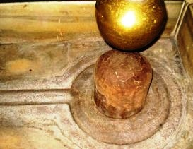

<?xml version="1.0" encoding="UTF-8"?><rss version="2.0"
	xmlns:content="http://purl.org/rss/1.0/modules/content/"
	xmlns:wfw="http://wellformedweb.org/CommentAPI/"
	xmlns:dc="http://purl.org/dc/elements/1.1/"
	xmlns:atom="http://www.w3.org/2005/Atom"
	xmlns:sy="http://purl.org/rss/1.0/modules/syndication/"
	xmlns:slash="http://purl.org/rss/1.0/modules/slash/"
	>

<channel>
	<title>Jyoti Rupeshwar &#8211; Varanasi Temples</title>
	<atom:link href="index.html" rel="self" type="application/rss+xml" />
	<link>../../../../../index.html</link>
	<description>Temples of Varanasi as referred to in Kashi Khand</description>
	<lastBuildDate>Thu, 19 Jun 2025 05:16:46 +0000</lastBuildDate>
	<language>en-US</language>
	<sy:updatePeriod>hourly</sy:updatePeriod>
	<sy:updateFrequency>1</sy:updateFrequency>
	<generator>https://wordpress.org/?v=4.6.29</generator>
	<item>
		<title>JYOTI RUPESHWAR</title>
		<link>../../../../../shiva-temples/jyoti-rupeshwar/index.html</link>
		<pubDate>Sun, 09 May 2010 09:35:33 +0000</pubDate>
		<dc:creator><![CDATA[admin]]></dc:creator>
				<category><![CDATA[Jyoti Rupeshwar]]></category>
		<category><![CDATA[Other Shiva Temples (E-K)]]></category>
		<category><![CDATA[Shiva Temples]]></category>
		<category><![CDATA[jyoti]]></category>

		<guid isPermaLink="false">../../../../../p=333.html</guid>
		<description><![CDATA[Kashi Khand, Chapter 94, mentions a Ling called Jyoti Rupeshwar near Manikarnika. It is stated that river Ganga which is worshipped as Goddess, herself worships Jyoti Rupeshwar. Long long ago, Lord Vishnu was undergoing severe penance of Lord Shiva at Chakra Pushkarini (Mani Karnika) when a divine light in the form of a Ling appeared. [&#8230;]]]></description>
				<content:encoded><![CDATA[<p>Kashi Khand, Chapter 94, mentions a Ling called Jyoti Rupeshwar near Manikarnika. It is stated that river Ganga which is worshipped as Goddess, herself worships Jyoti Rupeshwar.</p>
<p>Long long ago, Lord Vishnu was undergoing severe penance of Lord Shiva at Chakra Pushkarini (Mani Karnika) when a divine light in the form of a Ling appeared. This was Jyoti Rupeshwar.</p>
<p></p>
<p style="text-align: center;"><strong>(JYOTI RUPESHWAR)</strong></p>
<p>Devotees who worship this Ling regularly are said to attain Siddhi (divine powers). The devotees will themselves start shining like Jyoti (ray of light).</p>
<h2>LOCATION OF JYOTI RUPESHWAR</h2>
<p>Jyoti Rupeshwar is located at Ck.8/10, Gomath, Abhay Sanyas Ashram. At one time this must have been in the open, but now it is within the premises of the Ashram.  However, devotee can have darshan of this divine Ling.  This Ling is called as Jyoti Lingeshwar by the locals.</p>
<p>Devotees can travel upto Chowk by rickshaw and walk upto this place. They may have to take directions from locals to reach Gomath.</p>
<h2>TYPES OF POOJA</h2>
<p>This Ling is in a private property and nothing much can be added about this than what is stated above.</p>
]]></content:encoded>
			</item>
	</channel>
</rss>
